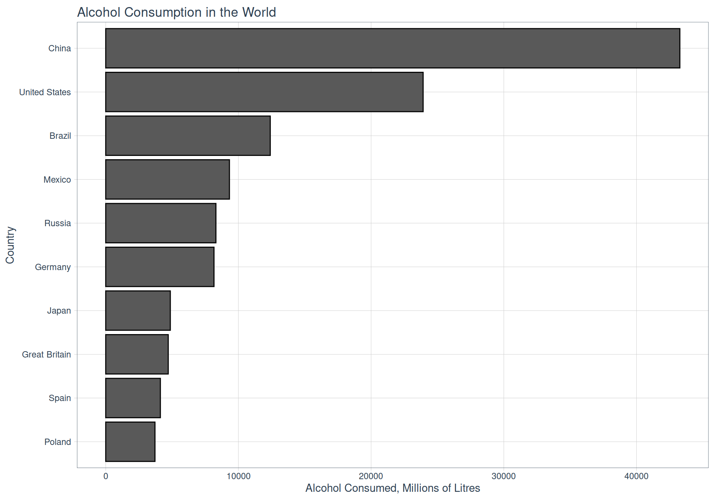

BEER DEBATE
Analyzing Consumer Ratings of Beers on BeerAdvocate.com
Sunday February 20, 2022
Background
Drinkers like their beer cold. However, as is the case with all alcoholic drinks, beer is as controversial as it is loved. According to some estimates, global beer consumption stands at 200 million kilolitres and growing. Without doubt, brewing beer is a major economic activity. However, detractors argue that alcohol addiction wrecks individuals and families, at times leading to death. But people continue to drink regardless.
In this article, I use data from beer advocate on the ratings of beers (by the beer lovers, of course). I supplement this data with beer consumption data from Wikipedia.
wiki_adress <- "https://en.wikipedia.org/wiki/List_of_countries_by_beer_consumption_per_capita"
wiki_data <- read_html(wiki_adress) %>%
html_nodes("table") %>%
html_table() %>%
.[[1]] %>%
janitor::clean_names() %>%
mutate(country = str_remove_all(country, "\\*")) %>%
mutate(total_nationalconsumption_a_million_litresper_year =
parse_number(total_nationalconsumption_a_million_litresper_year)) %>%
select(-sources)###############################################################
## Scrapping function -----
###############################################################
my_comprehensive_scrapper <- function(url, n_rows, category){
## get the Beers, number of votes and average rating ----
beer_data_main <- read_html(url) %>%
html_nodes(".hr_bottom_light b") %>%
html_text() %>%
tibble() %>%
mutate(key = rep(1:3, n_rows))
beer <- data.frame(beer = filter(beer_data_main, key == 1))
votes <- data.frame(votes = filter(beer_data_main, key == 2))
avg <- data.frame(avg = filter(beer_data_main, key == 3))
long_beers <- bind_cols(beer, votes, avg) %>%
select(-ends_with("key")) %>%
set_names(c("beer", "votes", "rating_average"))
## Get the beer category- like stout ----
beer_category <- read_html(url) %>%
html_nodes("#ba-content a~ a") %>%
html_text() %>%
tibble() %>%
set_names("type")
## Get the full table ----
full_table <- read_html(url) %>%
html_nodes("table") %>%
html_table() %>%
.[[1]] %>%
filter(!is.na(X1)) %>%
select(-X1, -X3, -X4, -X5)
## Combine the three tables to form one table ----
long_beers %>% bind_cols(full_table) %>%
bind_cols(beer_category) %>%
mutate(X2 = str_remove_all(X2, beer)) %>%
mutate(X2 = str_remove_all(X2, type)) %>%
mutate(alcohol_perc = str_extract(X2, "\\d{1,2}\\.\\d{2}%$"),
X2 = str_remove_all(X2, "\\|\\s?\\d{1,2}\\.\\d{2}%$"),
alcohol_perc = parse_number(alcohol_perc),
category = category) %>%
rename(brewer = X2)
}###################################################################################
top_250_beers <- my_comprehensive_scrapper(url = "https://www.beeradvocate.com/beer/top-rated/",
n_rows = 250, category = "top_250")
trending_beers <- my_comprehensive_scrapper(url = "https://www.beeradvocate.com/beer/trending/",
n_rows = 100, category = "trending")
top_new <- my_comprehensive_scrapper(url = "https://www.beeradvocate.com/beer/top-new/",
n_rows = 250, category = "new")
fame_beer <- my_comprehensive_scrapper(url = "https://www.beeradvocate.com/beer/fame/",
n_rows = 250, category = "fame")
popular_beer <- my_comprehensive_scrapper(url = "https://www.beeradvocate.com/beer/popular/",
n_rows = 250, category = "popular")
########################################################################################### Combine the three datasets ----
full_beer_data <- top_250_beers %>%
bind_rows(trending_beers) %>%
bind_rows(top_new) %>%
bind_rows(fame_beer) %>%
bind_rows(popular_beer) %>%
## Add alcohol percentage for beers with the missing data
mutate(
alcohol_perc = case_when(
beer == "Rare Scooop" ~ 6.16,
beer == "Madness & Civilization #14" ~ 3.81,
beer == "Thumbprint Lots O' Peach 21" ~ 7.55,
beer == "Persevere" ~ 6.12,
beer == "Sankt" ~ 7.21,
beer == "Nonconformist 02" ~ 7.94,
TRUE ~ alcohol_perc
)) %>%
###################################################################################
## Add beer category light, medium, strong
mutate(strength_class = case_when(
alcohol_perc <= 5 ~ "lite",
alcohol_perc > 5 & alcohol_perc <= 10 ~ "medium",
alcohol_perc > 10 & alcohol_perc <= 15 ~ "strong",
alcohol_perc > 15 & alcohol_perc <= 20 ~ "super",
TRUE ~ "ultra"
)) %>%
## Convert rating average and votes to numeric
mutate(votes = parse_number(votes),
rating_average = parse_number(rating_average)) %>%
relocate(category, votes, rating_average,
.after = strength_class) %>%
select(-category) %>%
group_by(beer, brewer, type, alcohol_perc, strength_class) %>%
summarise(votes = sum(votes),
rating_average = mean(rating_average)) %>%
ungroup() %>%
distinct() %>%
mutate(brewer = str_trim(brewer),
beer = str_trim(beer),
type = str_trim(type))
##########################################################################Objectives
This article seeks answers to the following questions:
- Which countries have the highest per capita beer consumption?
- Which countries have the highest beer consumption?
- What is the most popular beer and beer type?
- Which brewing company in the data set brews the most popular beers.
- Which beer categories have the highest alcohol content.
- Which beers have the weirdest names?
- What factors drive beer ratings.
Summary of Results
The Czech Republic has the highest per capita beer consumption.
China and the United States are the most extensive beer markets.
When it comes with beers with wierd names, there is no shortage. Sample these:
A Deal with the Devilby Anchorage Brewing Company.Arrogant Bastard Aleby Arrogant Consortia.Bringing Extra Sexy Backby Aslin Beer Company.Civil Disobedience #31by Hill Farmstead Brewery.Holy Ghostby, wait, Parish Brewing Company.Sexual Chocolateby Foothills Brewing Company - Downtown Brewpub.Sweet Baby Jesus!by DuClaw Brewing Company.The Devil Made Me Do It!by Tyranena Brewing Company.
The Data
As noted before, there are two sets of data. The data from Wikipedia has 61 rows and 5 columns of the following variables.
- Country
- consumptionper_capita_1_litres: Per capita beer consumption in litres.
- “x2018change_litres_per_year”: Change in per capita consumption from the previous year.
- total_nationalconsumption_a_million_litresper_year”: Total beer consumption in millions of litres in the year.
- Year: Indicates the year the data was collected.
wiki_data %>%
select(where(is.numeric)) %>%
skim_without_charts() %>%
select(-skim_type) %>%
rename(Variable = skim_variable,
Missing = n_missing, Mean = numeric.mean,
SD = numeric.sd, Min = numeric.p0,
Q1 = numeric.p25, Median = numeric.p50,
Q3 = numeric.p75, Max = numeric.p100) %>%
kbl(., booktabs = TRUE,
caption = "Summary of Numeric Variables") %>%
kable_classic(full_width = TRUE, font_size = 10) %>%
footnote(number = "Data source: Wikipedia")| Variable | Missing | complete_rate | Mean | SD | Min | Q1 | Median | Q3 | Max |
|---|---|---|---|---|---|---|---|---|---|
| consumptionper_capita_1_litres_per_year | 0 | 1.0000000 | 54.9541 | 34.574054 | 0.7 | 27.00 | 58.4 | 76.1 | 188.6 |
| x2018change_litres_per_year | 21 | 0.6557377 | 0.4975 | 3.235499 | -3.2 | -1.45 | -0.3 | 1.5 | 14.2 |
| total_nationalconsumption_a_million_litresper_year | 18 | 0.7049180 | 3430.2326 | 7605.899636 | 50.0 | 297.50 | 565.0 | 2734.5 | 43266.0 |
| year | 5 | 0.9180328 | 2018.0893 | 1.697879 | 2013.0 | 2018.00 | 2019.0 | 2019.0 | 2020.0 |
| 1 Data source: Wikipedia |
################################################################################wiki_data %>%
select(country) %>%
skimr::skim() %>%
select(-skim_type) %>%
rename(Variable = skim_variable) %>%
kbl(., booktabs = TRUE,
caption = "Summary of Non-numeric Variables") %>%
kable_classic(full_width = TRUE, font_size = 10) %>%
footnote(number = "Data source: Wikipedia")| Variable | n_missing | complete_rate | character.min | character.max | character.empty | character.n_unique | character.whitespace |
|---|---|---|---|---|---|---|---|
| country | 0 | 1 | 4 | 23 | 0 | 61 | 0 |
| 1 Data source: Wikipedia |
The second data set comes from beeradvocate.com. The data has the following variables.
beer: The name of the beer.votes: The number of votes that the beer received from consumers.rating_average: The average rating from consumers. Note that the rating is on a scale of 1 to 5.brewer: The name of the brewer.type: The type of beer, for instance, lager and ale.alcohol_perc: The alcohol content.
I start with a summary of the quantitative variables.
full_beer_data %>%
select(where(is.numeric)) %>%
skim_without_charts() %>%
select(-skim_type) %>%
rename(Variable = skim_variable,
Missing = n_missing,
Mean = numeric.mean,
SD = numeric.sd,
Min = numeric.p0,
Q1 = numeric.p25,
Median = numeric.p50,
Q3 = numeric.p75,
Max = numeric.p100) %>%
kbl(., booktabs = TRUE,
caption = "Summary of Numeric Variables") %>%
kable_classic(full_width = TRUE, font_size = 10) %>%
footnote(number = "Data source: BeerAdvocate.com")| Variable | Missing | complete_rate | Mean | SD | Min | Q1 | Median | Q3 | Max |
|---|---|---|---|---|---|---|---|---|---|
| alcohol_perc | 9 | 0.9902067 | 9.322110 | 3.2287531 | 3.50 | 7.00 | 8.50 | 11.40 | 28.00 |
| votes | 0 | 1.0000000 | 3172.613711 | 5723.6764643 | 5.00 | 31.50 | 837.00 | 3967.50 | 53466.00 |
| rating_average | 0 | 1.0000000 | 4.293961 | 0.3312428 | 1.87 | 4.16 | 4.34 | 4.51 | 4.83 |
| 1 Data source: BeerAdvocate.com |
##########################################################################full_beer_data %>%
select(-alcohol_perc, -votes, -rating_average) %>%
skimr::skim() %>%
select(-skim_type) %>%
rename(Variable = skim_variable) %>%
kbl(., booktabs = TRUE,
caption = "Summary of Non-numeric Variables") %>%
kable_classic(full_width = TRUE, font_size = 10) %>%
footnote(number = "Data source: BeerAdvocate.com")| Variable | n_missing | complete_rate | character.min | character.max | character.empty | character.n_unique | character.whitespace |
|---|---|---|---|---|---|---|---|
| beer | 0 | 1 | 2 | 69 | 0 | 907 | 0 |
| brewer | 0 | 1 | 0 | 104 | 1 | 294 | 0 |
| type | 0 | 1 | 6 | 36 | 0 | 81 | 0 |
| strength_class | 0 | 1 | 4 | 6 | 0 | 5 | 0 |
| 1 Data source: BeerAdvocate.com |
##########################################################################Exploring the data
The data shows that the Czech Republic has the highest per capita beer consumption. It is notable that except for Namibia, an African Country, the rest of the countries with the highest per capita beer consumption are from Europe.
wiki_data %>%
arrange(desc(consumptionper_capita_1_litres_per_year)) %>%
head(10) %>%
ggplot(mapping = aes(x = fct_reorder(country, consumptionper_capita_1_litres_per_year, max),
y = consumptionper_capita_1_litres_per_year)) +
geom_col(show.legend = FALSE, color = "black") +
coord_flip() +
labs(x = "Country",
y = "Beer Consumption, Litres per Year",
caption = "Data Source: Wikipedia",
title = "Per Capita Beer Consumption in the World")The absolute amounts of alcohol taken could be a function of the country’s population and level of income. In this case, China and the United States lead in total beer consumption.
wiki_data %>%
arrange(desc(total_nationalconsumption_a_million_litresper_year)) %>%
head(10) %>%
ggplot(mapping = aes(x = fct_reorder(country, total_nationalconsumption_a_million_litresper_year, max),
y = total_nationalconsumption_a_million_litresper_year)) +
geom_col(color = "black", show.legend = FALSE) +
labs(x = "Country", y = "Alcohol Consumed, Millions of Litres",
title = "Alcohol Consumption in the World") +
coord_flip()
Notably, Germany, Spain and Poland appear in both lists. These three countries present prime markets for beer.
Popular Beer Brands
In this section, I examine the beers that have the highest average ratings.
full_beer_data %>%
distinct() %>%
arrange(desc(rating_average)) %>%
head(10) %>%
kbl(., booktabs = TRUE) %>%
kable_classic(full_width = TRUE, font_size = 10) %>%
footnote(number = "Data Source: BeerAdvocate.com") | beer | brewer | type | alcohol_perc | strength_class | votes | rating_average |
|---|---|---|---|---|---|---|
| Kentucky Brunch Brand Stout | Toppling Goliath Brewing Company | Stout - American Imperial | 12.00 | strong | 886 | 4.83 |
| Assassin - Double Barrel-Aged | Toppling Goliath Brewing Company | Stout - American Imperial | 14.89 | strong | 17 | 4.80 |
| Beer:Barrel:Time (2021) | Beer:Barrel:Time (2021)Side Project Brewing | Stout - American Imperial | 15.00 | strong | 36 | 4.80 |
| M.J.K. | Side Project Brewing | Barleywine - English | 20.00 | super | 17 | 4.80 |
| Vanilla Bean Assassin | Toppling Goliath Brewing Company | Stout - American Imperial | 12.80 | strong | 102 | 4.80 |
| Coconut Vibes - Barrel-Aged | Shared Brewing | Stout - Russian Imperial | 15.00 | strong | 73 | 4.79 |
| A Deal With The Devil - Triple Oak-Aged | Anchorage Brewing Company | Barleywine - American | 17.00 | super | 76 | 4.76 |
| Blessed | Anchorage Brewing Company | Stout - American Imperial | 14.00 | strong | 207 | 4.75 |
| Abraxas - Barrel-Aged | Perennial Artisan Ales | Stout - American Imperial | 11.00 | strong | 1637 | 4.73 |
| Marshmallow Handjee | 3 Floyds Brewing Co. | Stout - Russian Imperial | 15.00 | strong | 1776 | 4.73 |
| 1 Data Source: BeerAdvocate.com |
It is worthy noting that some of these ratings come from very few consumers. For instance, Kentucky Brunch Brand Stout received 883 votes with n average rating of 4.83, the highest rating in the data set. On the contrary, the second highest rating beer Assassin - Double Barrel-Aged received only 17 votes with an average rating of 4.80. Beers with such few ratings may not give a fair view of consumers on the quality of a beer.
For this reason, I filter the data to only include beers with at least 100 ratings. Kentucky Brunch Brand Stout and Vanilla Bean Assassin both brewed by the Toppling Goliath Brewing Company have the highest ratings of 4.83 and 4.80, respectively.
full_beer_data %>%
distinct() %>%
arrange(desc(rating_average)) %>%
filter(votes >= 100) %>%
head(10) %>%
kbl(., booktabs = TRUE) %>%
kable_classic(full_width = TRUE, font_size = 10) %>%
footnote(number = "Data Source: BeerAdvocate.com") | beer | brewer | type | alcohol_perc | strength_class | votes | rating_average |
|---|---|---|---|---|---|---|
| Kentucky Brunch Brand Stout | Toppling Goliath Brewing Company | Stout - American Imperial | 12.0 | strong | 886 | 4.83 |
| Vanilla Bean Assassin | Toppling Goliath Brewing Company | Stout - American Imperial | 12.8 | strong | 102 | 4.80 |
| Blessed | Anchorage Brewing Company | Stout - American Imperial | 14.0 | strong | 207 | 4.75 |
| Abraxas - Barrel-Aged | Perennial Artisan Ales | Stout - American Imperial | 11.0 | strong | 1637 | 4.73 |
| Marshmallow Handjee | 3 Floyds Brewing Co. | Stout - Russian Imperial | 15.0 | strong | 1776 | 4.73 |
| Hunahpu’s Imperial Stout - Double Barrel Aged | Cigar City Brewing | Stout - American Imperial | 11.0 | strong | 1657 | 4.72 |
| SR-71 | Toppling Goliath Brewing Company | Stout - American Imperial | 14.0 | strong | 546 | 4.72 |
| Barrel Aged Imperial German Chocolate Cupcake Stout | Angry Chair Brewing | Stout - American Imperial | 11.0 | strong | 351 | 4.71 |
| Heady Topper | The Alchemist | IPA - Imperial | 8.0 | medium | 45200 | 4.71 |
| King JJJuliusss | Tree House Brewing Company | IPA - New England | 8.4 | medium | 816 | 4.71 |
| 1 Data Source: BeerAdvocate.com |
I also visualize the number of votes that each beer has received which could is also a proxy of popularity. Breakfast Stout by Founders Brewing Company and Pliny the Elder by the Russian River Brewing Company lead the way.
full_beer_data %>%
distinct() %>%
filter(votes >= 100) %>%
arrange(desc(votes)) %>%
head(10) %>%
ggplot(mapping = aes(x = fct_reorder(beer, votes, max),
y = votes, fill = brewer)) +
geom_col(show.legend = TRUE) +
coord_flip() +
labs(x = "Beer", y = "Votes",
title = "Beers with the Highest Votes")Popular Beer Types
There are several categories of beer that each of the beers in the data belongs to. The variable type gives these classifications. The most common beer categories include. Note that I also filter out beers with less than 100 votes.
full_beer_data %>%
filter(votes >= 100) %>%
count(type, sort = TRUE, name = "Number_of_Beers") %>%
filter(Number_of_Beers >= 10) %>%
kbl(., booktabs = TRUE,
caption = "Most Popular Beer categories") %>%
kable_classic(full_width = FALSE,
font_size = 10) %>%
footnote(number = "Data Source: BeerAdvocate.com") | type | Number_of_Beers |
|---|---|
| Stout - American Imperial | 94 |
| IPA - New England | 53 |
| IPA - Imperial | 47 |
| IPA - American | 45 |
| Stout - Russian Imperial | 32 |
| Farmhouse Ale - Saison | 24 |
| Wild Ale | 18 |
| Lambic - Fruit | 16 |
| Pale Ale - American | 12 |
| Strong Ale - Belgian Dark | 12 |
| Tripel | 12 |
| Barleywine - American | 11 |
| Stout - Sweet / Milk | 11 |
| Strong Ale - Belgian Pale | 11 |
| Lambic - Gueuze | 10 |
| Strong Ale - American | 10 |
| 1 Data Source: BeerAdvocate.com |
I also examine beer categories that have the highest average rating. In this case, I group the data into categories and then compute the median rating. Here, IPA - New England and Sour - Fruited Kettle Sour beer categories lead with a median rating of 4.56.
full_beer_data %>%
filter(votes >= 100) %>%
group_by(type) %>%
summarise(Median_Rating = median(rating_average),
Mean_Rating = mean(rating_average)) %>%
arrange(desc(Median_Rating)) %>%
head(10) %>%
kbl(., booktabs = TRUE,
caption = "Most Popular Beer Types (Mean and Median of Average Ratings)") %>%
kable_classic(full_width = FALSE,
font_size = 10) %>%
footnote(number = "Data Source: BeerAdvocate.com") | type | Median_Rating | Mean_Rating |
|---|---|---|
| IPA - New England | 4.560 | 4.565094 |
| Sour - Fruited Kettle Sour | 4.560 | 4.560000 |
| Wild Ale | 4.545 | 4.517222 |
| Porter - Imperial | 4.540 | 4.494444 |
| Farmhouse Ale - Saison | 4.510 | 4.411667 |
| Stout - American Imperial | 4.510 | 4.490213 |
| Stout - Sweet / Milk | 4.490 | 4.279091 |
| Lambic - Gueuze | 4.480 | 4.425000 |
| Lambic - Fruit | 4.445 | 4.405625 |
| Barleywine - English | 4.420 | 4.424286 |
| 1 Data Source: BeerAdvocate.com |
Popular Brewers
In this section, I examine brewers that have the most beers in the dataset with al least 100 votes. Here, Tree House Brewing Company and Founders Brewing Company lead the way with 27 beers and 17 beers, respectively, in the list.
full_beer_data %>%
filter(votes >= 100) %>%
count(brewer, sort = TRUE, name = "Number_of_Beers") %>%
filter(Number_of_Beers >= 10) %>%
kbl(., booktabs = TRUE,
caption = "Most Popular Brewers") %>%
kable_classic(full_width = FALSE,
font_size = 10) %>%
footnote(number = "Data Source: BeerAdvocate.com") | brewer | Number_of_Beers |
|---|---|
| Tree House Brewing Company | 27 |
| Founders Brewing Company | 17 |
| Hill Farmstead Brewery | 17 |
| Trillium Brewing Company | 15 |
| Dogfish Head Craft Brewery | 13 |
| 3 Floyds Brewing Co. | 12 |
| Brasserie Cantillon | 12 |
| Side Project Brewing | 12 |
| Bottle Logic Brewing | 10 |
| Russian River Brewing Company | 10 |
| Toppling Goliath Brewing Company | 10 |
| 1 Data Source: BeerAdvocate.com |
Again, I examine the median rating that the brewers receive. Anchorage Brewing Company leads, followed by Revolution Brewing.
full_beer_data %>%
filter(votes >= 100) %>%
group_by(brewer) %>%
summarise(Median_Rating = median(rating_average),
Mean_rating = mean(rating_average)) %>%
arrange(desc(Median_Rating)) %>%
head(10) %>%
kbl(., booktabs = TRUE,
caption = "Most Popular Brewers (Mean and Median of Average Ratings)") %>%
kable_classic(full_width = FALSE,
font_size = 10) %>%
footnote(number = "Data Source: BeerAdvocate.com") | brewer | Median_Rating | Mean_rating |
|---|---|---|
| Anchorage Brewing Company | 4.700 | 4.660 |
| Revolution Brewing | 4.680 | 4.680 |
| Cycle Brewing | 4.670 | 4.670 |
| CBS (Canadian Breakfast Stout)Founders Brewing Company | 4.640 | 4.640 |
| Shared Brewing | 4.630 | 4.630 |
| Angry Chair Brewing | 4.615 | 4.615 |
| Toppling Goliath Brewing Company | 4.615 | 4.634 |
| Parish Brewing Company | 4.610 | 4.610 |
| Trappist Westvleteren 12 (XII)Brouwerij Westvleteren (Sint-Sixtusabdij van Westvleteren)Quadrupel (Quad) | 4.610 | 4.610 |
| Forager Brewing Company | 4.600 | 4.600 |
| 1 Data Source: BeerAdvocate.com |
Weird Beer Names
When it comes with beers with weird names, the data set has quite a number. Sample these:
A Deal with the Devilby Anchorage Brewing Company.Arrogant Bastard Aleby Arrogant Consortia.Bringing Extra Sexy Backby Aslin Beer Company.Civil Disobedience #31by Hill Farmstead Brewery.Holy Ghostby, wait, Parish Brewing Company.Sexual Chocolateby Foothills Brewing Company - Downtown Brewpub.Sweet Baby Jesus!by DuClaw Brewing Company.The Devil Made Me Do It!by Tyranena Brewing Company.